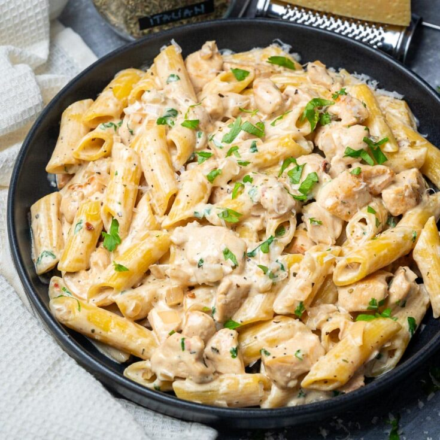

Creamy chicken with penne

This creamy chicken pasta is comfort food at its best!
Loaded with tender bits of chicken and a heavenly creamy sauce made with Greek yogurt
honey and freshly corn, this pasta dish is a proper treat, its healthy and is ready
in just 25 minutes!
- 250gr Pasta penne
- Salt
- Two chicken breasts
- Olive oil
- Pepper
- Thyme
- 200gr Greek yogurt
- 70gr honey
- Mustard
- Corn
- Mint
Steps
- In a pot of boiling water, add salt and the penne
- Boil for ten minutes
- Place a pan on high heat
- Cut each fillet crosswise into four slices and spread salt, pepper, 1 tbsp. thyme and olive oil
- Transfer to the hot pan and cook for 3-4 minutes on both sides
- Put the yogurt, honey, mustard, salt, pepper in a bowl and mix with a spoon
- Add the corn, thyme and chopped mint
- Remove the chicken from the pan, cut it into strips and put it in the bowl
- Strain the penne, put them in the bowl and mix
- Serve with mint, thyme and olive oil